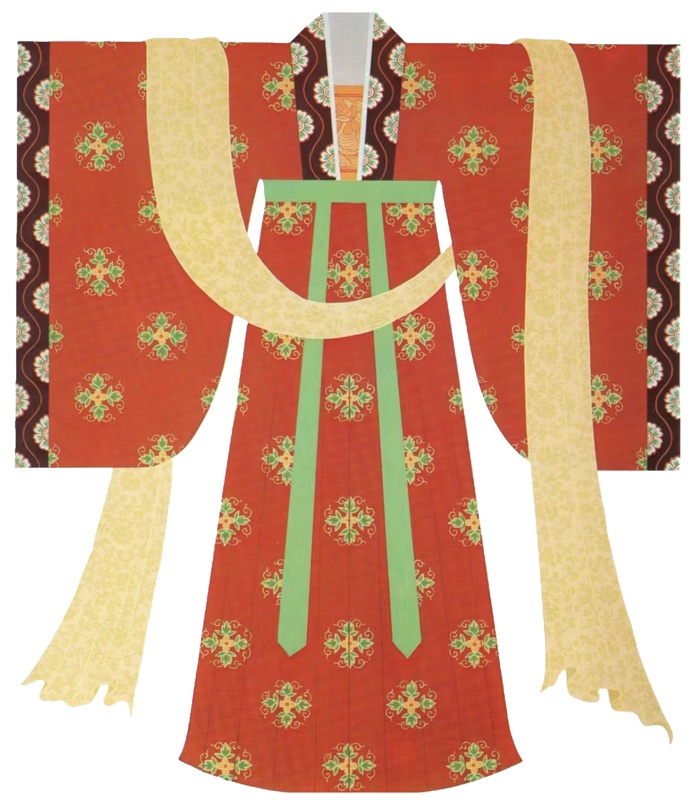

《
隋唐时期女子衣服的形制
隋唐时期女子衣服的形制主要有襦裙、袍、衫、帔等.
襦裙是一种上下分割的汉服，上衣为紧身襦，下摆为宽松的裙子，通常以腰带系扎。襦裙的色彩较为丰富，其中以红、黄、绿等颜色最为常见。
袍是上下缝合的服装，通常穿于襦裙外，里面需要中衣、裤、裙为衬。
衫是一种单层或夹层的上衣，有长袖或短袖，通常为直领或交领。
帔是一种类似披肩或围巾的服装，多为长条形，两端有装饰。
此外，隋唐时期女子衣服还有半臂、诃子裙、袒胸衣等形制。
半臂类似于现在的短袖衬衫，诃子裙是一种腰部有系带的裙子，袒胸衣则是一种领口较低的上衣。
文献中出现石榴裙、柳花裙、藕丝裙、珍珠裙、翡翠裙、郁金裙、花笼裙、百鸟裙等。有的是指质地、颜色、款式，有的是指工艺。在众多的裙服中，石榴裙最为有名
据传，杨贵妃非常喜欢牡丹花，她的衣裳上也绣满了牡丹花纹。每次杨贵妃穿着绣满牡丹花纹的衣物出场，都会让全场的焦点都集中在她身上。因此，牡丹花也成为了隋唐时期流行的花纹之一。
杨贵妃身出“红开”井染红指汗的“巾帕”，是她浓抹厨脂与红粉的染色所致。除了脸上之外的装饰涂抹，杨贵妃还喜爱胸佩“香囊”。据说当是西域进奉的香料，香气十分浓厚持久，把这个香料放进精美的布囊之中，于是便有了“香囊”的产生。
杨贵妃喜欢穿着轻盈的薄纱衣，这种衣服质轻如纱，非常适合她跳舞时的身姿，也让她看起来更加飘逸、优美；她穿着的罗裙通常都是用锦绣织成的，色彩鲜艳、图案精美；她有一件紫色的薄绢衣服，非常华丽。这种紫色的薄绢衣服在当时非常流行；她头上佩戴的金步摇非常华丽，金雀、玉搔头等饰物也十分精致。
》